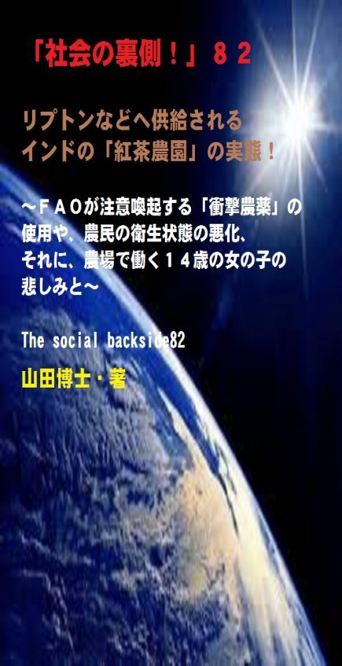

| 「社会の裏側！」８２......リプトンなどへ供給されるインドの「紅茶農園」の実態！: ＦＡＯが注意喚起する「衝撃農薬」の使用や、農民の衛生状態の悪化、それに、農場で働く１４歳の女の子の悲しみと | |
| 山田博士 | |
| kominitesyuppankai (2017) | |

■「社会の裏側！」８２
リプトンなどへ供給されるインドの「紅茶農園」の実態！
～ＦＡＯが注意喚起する「衝撃農薬」の使用や、農民の衛生状態の悪化、それに、農場で働く１４歳の女の子の悲しみと～
The social backside82
山田博士・著
★本書の著作権について
皆さんにはまったく関係ないことだと思いますが、複写、転送、抜粋、転載など、著作権侵害にあたる行為は絶対になさらないで下さい。本書の著作権は、山田博士にあります。今後、皆さんのお役に立ちたい活動が出来なくなりますので、その点、ぜひよろしくお願いします。ささささ、それでは、本書をどうぞ、ごゆっくりご覧下さい。
★概要
どうです、お茶でもごいっしょに......。
......なんて、ぼくたちは人に会うと決まって、このような言葉で親しい人を誘います。
えっと......かく言うぼくも、若いころ、妻を最初に誘ったときは、やはりこの言葉で......えっと......(ハハハ......と、ごまかす)。
でもそれぐらい、ぼくたちの暮らしの中で、この「お茶」という存在は、大きな役目を持っております。
いまのような乾いた「東京砂漠」の中にあって、コンコンと湧（わ）いている泉（いずみ）のようなものが、その「お茶」だと言って、いいのかもしれません。
その一杯が、喉（のど）を潤（うるお）し、心を温め、人間関係をより親しいものにする。
そしてそこには、「幸せな時間」がいっぱい詰まっているわけですね。
でもその場合、一つの前提があります。
その「お茶一杯」の中身が、安全で美味しくて、しかもそれを一所懸命に作ってくれている人たちも「同時に」幸せであること。
そうでなくては、本当の幸福とは言えません。
もし、その「お茶一杯」の中身が危ないものであったり、それを作ってくれている労働者の健康が損（そこ）なわれているのであれば、そんな「お茶一杯」だなんて、何の意味がありますか。
日本では緑茶などを飲みますが、最近はカフェなどで紅茶を飲むかたも増えました。
コーヒーはちょっと......というかたも、気軽に紅茶を飲んでいらっしゃるようです。
でも、その「紅茶一杯」の陰に、大きな問題が見え隠れしております。
じつは、「紅茶・生産王国」のインドで、いま、とんでもないことが起こっております。
インドは、皆さんもうご存じの、ダージリンやアッサムなどでも有名な「世界最大の紅茶生産・王国」ですよね。
そのインドでも、いまでは緑茶まで流行（はや）っているようですが、いずれにしても、これらの「お茶の葉」に、もの凄（すご）い農薬が撒（ま）かれていることが分かりました。
そして、その残留値がかなりの数値に......。
それらの「お茶の葉」は、ロシアや、アメリカ、イギリス、ドイツ、日本などに、かなり高い比率で輸出されているわけですね。
もちろん、日本の居間で、いまあなたが談笑しながらお飲みになっていらっしゃるその紅茶にも、これらの農薬が......(笑)。
そして、農民たちの衛生状態など、問題は、山積しております。
まままま、どうぞ、本書をごゆっくりをどうぞ......。
★目次
★（第１章）
あのとき、あなたとくちづけをして、あのとき、あの子と別れた私(あたし)。つめたい女だと、人は云うけれど、いいじゃないの、幸せならば......で、いいのでしょうか(笑)......
★（第２章）
そして、日本でも以前は使用されていて、現在は生産も使用も禁止されているあの悪名高いＤＤＴが、インドでは現在も頻繁に使われていることも分かりました。しかも、ＦＡＯが重要な注意喚起をしているミツバチの大量死の一因ともなって騒がれているネオニコチノイド系農薬の「イミダクロブリド」などが検出されているんですね......
★（第３章）
この農場で働く女の子は、１４歳だと言います。なのに、２か月間、一日中労働しているんですね。こんな悲しいことって、ありますか。ぼくたちが優雅にホットティなどをたしなんでいる最中に、こうした小さな子どもたちが一日中、労働している......
★（第４章）
しかも、先述したような「カースト制度」がいまだに残っていて、現在の紅茶栽培の問題を根深くしております。もともと、この「カースト制度」は、ヒンドゥー社会における基本的な社会構造だったわけですね。歴史は遡（さかのぼ）りますが、アーリア人たちがインドに侵入した紀元前１０００年ごろに、先住民たちを支配するために作られたものでした......
★「社会の裏側！」シリーズの既刊本案内
★プロフィール
（最初に、恥ずかしながら、ぼくの紹介を簡単に述べておきます）
やまだ・ひろし。
１９４７年、福井県小浜（おばま）市生まれ。
食生態学者。元大学名誉教授。日本危機管理学会会員。
山田博士いのち研究所主宰。
ベトナム戦争の終わったちょうどその年１９７５年に、マンガストーリィと商品の実名で食べものや環境を取り上げた小冊子「暮しの赤信号」を発行する。実名で取り上げたため、社会に衝撃を与えた。各号１０万部単位で読まれ、隠れたベストセラーなどと、新聞などで何度も報道される。
同じ年、偶然にも有吉佐和子さんの「複合汚染」が発表され、この小冊子はその動きも受けて多くの学校の副読本としても活用された。
文化放送の「なっちゃこワイド」や、ＮＨＫ海外放送「ある日本人」でお話しをしたり、ギター弾き語り公演や、各自治体や学校などへの講演なども続けている。
現在は、メルマガ「暮しの赤信号」（「短縮版」と「完全版」の２種）を発行し、企業名や商品名なども公表して、世界中のかたに喜ばれている。
その読者層は、医師や看護師、栄養士、教師、会社経営者、自治体など、国の内外を問わず、多くの読者たちから毎日のように便りが届いている。年齢層も、１０代からかなりの高齢のかたまで、さまざまだ。
このメルマガは、まぐまぐ！を始め３つのスタンドの合計で、７千部発行しているが、もしご関心のあるかたは、ご覧いただくと嬉しい。毎日、早朝５時に届けられる（日曜は除く）。その時刻を楽しみにされている読者も多いとか。
先述したように、メルマガ「暮しの赤信号」には２種類あり、「短縮版」のほうは無料。「完全版」のほうは、山田の思いが１００％掲載されており、社会を見るのに、毎回大いに参考になるだろう。そのほかにもさまざまな特典がある。「短縮版」については、次のアドレスで登録できる（「完全版」は、「短縮版」の中に案内あり）。
■「短縮版」登録（無料）→ http://goo.gl/AFx95J
また、毎月第３土曜日に、東京の恵比寿でお茶飲み会「博々亭（ひろびろてい）」を開催。遠路から毎回読者が駆けつけている。参加条件はメルマガ読者に限定。参加費用は無料だ（８月と１２月はお休み）。
著書に 『脱コンビニ食！』（平凡社新書）
『危険な食品』（宝島社新書）
『その食品はホンモノですか？』（三才ブックス）
『ひとり月１万円食費で幸せ生活』（ＷＡＶＥ出版）
『最新 危ないコンビニ食』（現代書館）
『あぶないコンビニ食』（三一新書）
『続 あぶないコンビニ食』（同）
『外食店健康度ランキング』（同）
『山田博士の暮しの赤信号』第１巻～第５巻（亜紀書房）
『暮しの赤信号』小冊子＆ＣＤ－ＲＯＭ版全２３巻
『月１万少々の食費で、ザクザクと健康を稼ぐぼくの方法』
『いのち運転"即実践"マニュアル』各話
『社会の裏側！』各巻
（これは、アマゾン発行の電子書籍。ＰＤＦ版でも読める）
『セーラー服と警察犬』（小説）各巻
『実話・食卓の事件簿』各巻......などがある。
山田のホームページ http://yamadainochi.com/
★はじめに......
こんにちは。
山田博士（やまだ・ひろし）です。
本書をご覧いただき、嬉しく思っております。
この内容をご覧いただくことで、少しでもあなたが「社会の裏側！」の流れにお気づきになり、そしてたとえ１ミリでもいい、即、行動されることを願っております。
ただ読むだけでは、誰でもできます。
それでは、あなたの身の回りの状況は石のように動きません。
本書をご覧になって、これは......と思うことがあれば、即行動なさって下さい。
お願いします。
その小さな行動の積み重ねこそが、あなたの明日を、１２色のバラ色で輝かせることになると信じております。
なお、この「社会の裏側！」は、今後もシリーズとして発刊して行くつもりです。
もしご関心があれば、「社会の裏側！」という名前で、アマゾンで検索してお調べ下さい。
さまざまな問題の社会の裏側！を詳しく、しかも楽しく述べております。
ぼくの名前で検索されても、見つかるのではないかと思います。
もし、「ＰＤＦ版」でご希望の場合は、ぼくの事務局まで遠慮なくお問い合わせ下さい。事務局→ http://goo.gl/t12Yx
ささささ、能書きはそこまでにします。
どうぞ、笑顔で、頁をお繰（く）り下さい。
お楽しみに！
山田博士
★（第１章）
あのとき、あなたとくちづけをして、あのとき、あの子と別れた私(あたし)。つめたい女だと、人は云うけれど、いいじゃないの、幸せならば......で、いいのでしょうか(笑)......
どうです、お茶でもごいっしょに......。
......なんて、ぼくたちは人に会うと決まって、このような言葉で親しい人を誘います。
えっと......かく言うぼくも、若いころ、妻を最初に誘ったときは、やはりこの言葉で......えっと......(ハハハ......と、ごまかす)。
でもそれぐらい、ぼくたちの暮らしの中で、この「お茶」という存在は、大きな役目を持っております。
いまのような乾いた「東京砂漠」の中にあって、コンコンと湧（わ）いている泉（いずみ）のようなものが、その「お茶」だと言って、いいのかもしれません。
その一杯が、喉（のど）を潤（うるお）し、心を温め、人間関係をより親しいものにする。
そしてそこには、「幸せな時間」がいっぱい詰まっているわけですね。
でもその場合、一つの前提があります。
その「お茶一杯」の中身が、安全で美味しくて、しかもそれを一所懸命に作ってくれている人たちも「同時に」幸せであること。
そうでなくては、本当の幸福とは言えません。
もし、その「お茶一杯」の中身が危ないものであったり、それを作ってくれている労働者の健康が損（そこ）なわれているのであれば、そんな「お茶一杯」だなんて、何の意味がありますか。
いつもぼくは叫んでおります。
「自分だけが幸せだよというとき、それは本当の幸福じゃないよ」と。
でも、よく、こうおっしゃるかたがいます。
「いいじゃないの。（自分だけ、いまが）幸せならば......」。
まるでぼくの若いころに流行（はや）っていた、佐良直美（さがらなおみ）さんの歌のタイトルのよう。
で、その歌の歌詞、あなた、ご存じですか。
次のようなものでしたよね。
まだ知らないかた、（いつものように）ちょっとご覧くださいな。
「いいじゃないの幸せならば」
～歌／佐良直美、作詞／岩谷時子～
あのとき あなたとくちづけをして
あのとき あの子と別れた私(あたし)
つめたい女だと 人は云うけれど
いいじゃないの 幸せならば
あの晩 あの子の顔も忘れて
あの晩 あなたに抱かれた私
わるい女だと 人は云うけれど
いいじゃないの 今が良けりゃ
あの朝 あなたは煙草をくわえ
あの朝 ひとりで夢みた私
浮気な女だと 人は云うけれど
いいじゃないの 楽しければ
あしたは あなたに心を残し
あしたは あなたと別れる私
つめたい女だと 人は云うけれど
いいじゃないの 幸せならば
いやあ、この歌、懐（なつ）かしいなあ。
このふてくされた歌詞が、当時のぼくには、ちょうど似合っていた......(笑)。
タバコをのんだり、浮気だとか、あんまりよろしくない言葉も各所に散らばっておりますが、まあそのあたりはご勘弁していただくとして......。
でも、「いいじゃないの、今が良けりゃ」とか、「いいじゃないの、楽しければ」とか、「いいじゃないの、幸せならば」とか言うのは、これは、歌の世界での話。
現実問題として、こうした考えをいつも持っていれば、それは即、自分を不幸せにします。
だって、「自分だけが●●」という考えを持ったり行動をする人を、他人はしっかり見ていますからね（●●は下記の設問を）。
そのため、いつの間にか、誰からも相手にされなくなる。
これは事実です。
ぼくの周囲のかたの言動を見ていると、本当にそうだなあ......なんて感心するほど、当たります。
もちろん、だからと言って、最初から、自分の行動に報（むく）いなどを求めるようなことをしてはいけませんがね......。
日本では緑茶などを飲みますが、最近はカフェなどで紅茶を飲むかたも増えました。
コーヒーはちょっと......というかたも、気軽に紅茶を飲んでいらっしゃるようです。
でも、その「紅茶一杯」の陰に、大きな問題が見え隠れしております。
いったいそこに、何が見えるのか。
そして、ぼくたちが笑顔で、ゆっくりとその「紅茶一杯」をたしなむことができる環境にあるのかどうか。
しかも、その「生産者たちといっしょに幸せになれる」のかどうか。
そのあたりを、今回、少し見てみることにしましょうか。
そうでなくては、紅茶は美味くありません。
じつは、「紅茶・生産王国」のインドで、いま、とんでもないことが起こっておりまして......。
★（第２章）
そして、日本でも以前は使用されていて、現在は生産も使用も禁止されているあの悪名高いＤＤＴが、インドでは現在も頻繁に使われていることも分かりました。しかも、ＦＡＯが重要な注意喚起をしているミツバチの大量死の一因ともなって騒がれているネオニコチノイド系農薬の「イミダクロブリド」などが検出されているんですね......
インドは、皆さんもうご存じの、ダージリンやアッサムなどでも有名な「世界最大の紅茶生産・王国」ですよね。
そのインドでも、いまでは緑茶まで流行（はや）っているようですが、いずれにしても、これらの「お茶の葉」に、もの凄（すご）い農薬が撒（ま）かれていることが分かりました。
そして、その残留値がかなりの数値に......。
それらの「お茶の葉」は、ロシアや、アメリカ、イギリス、ドイツ、日本などに、かなり高い比率で輸出されているわけですね。
もちろん、日本の居間で、いまあなたが談笑しながらお飲みになっていらっしゃるその紅茶にも、これらの農薬が......(笑)。
じつは、先年おこなわれたある調査では、４６の「お茶の葉」のサンプル中、合計３４種類もの農薬が検出されているんですね（出所： 「 Trouble Brewin g 」英語版 。 201 4年8 月、グリーンピース・インド発行）。
これらの検出された農薬の中には、ＦＡＯ（国連食糧農業機関）が重要な注意喚起をしている農薬の「モノクロトホス」と、ミツバチの大量死の一因ともなって騒がれているネオニコチノイド系農薬の「イミダクロブリド」が検出されているんですね。
前者については、インドのビハールで、なんと２３人もの生徒が、「モノクロトホス」混入学校給食を食べて死亡したという悲劇が起こっています（２０１３年７月１６日）。
かなり強毒の有機リン系農薬なんですね。
こんなものが、紅茶などの「お茶の葉」に使われている。
「お茶の葉」を洗剤や石けんでゴシゴシと洗って飲む人は、いません。そうですよね。
あなた、紅茶や緑茶を洗いますか(笑)。
つまり、そのまま、熱い「農薬水」を飲むことになるわけですね。
後者のネオニコチノイド系農薬については、もう言わずもがな。
こんなものが平気で「お茶の葉」に使われているのですが、この調査によれば、農薬が検出されたサンプルの半数以上には、１０種類の混合農薬が"カクテル"になっていたようです。
う～むむむ。
農薬の「カクテル」ねえ......（そんなもの、飲みたくないなあ）。
あるサンプルには、なんと２０種類の農薬（殺虫剤）が混ぜられていたとも。
そして「最低でも一つの農薬が検出されたサンプル」には、ＥＵ（欧州連合）が設定した残留農薬の基準値を超えていたわけですね。
なんともはや......です。
また、先述したそのときに検出された農薬３４種類のうち、２３種類の農薬は、なんとインドでさえ、茶葉栽培への使用が許可されていないものなんです（インドさえ......なんて、インドさん、ごめん）。
そして、日本でも以前は使用されていて、現在は生産も使用も禁止されているあの悪名高いＤＤＴ（有機塩素系殺虫剤・農薬。日本では１９７１年に農薬登録が失効）が、インドでは現在も頻繁に使われていることも分かりました。
もちろん、インドでも、このＤＤＴは、１９８９年以降、使用が禁止されております。
でも、そんなこと、おかまいなしに......。
ええ～っ！
ええ～っ！
ええ～っ！（きっと、３回ほど叫ばれると思います。笑）
ＤＤＴとは、日本の敗戦直後に頭から振りかけられたあの殺虫剤のことじゃないか！
......なんて、目をひんむいて、驚かないでください。
あんな毒性の強いものが、いまもインドでは「お茶の葉」の農薬として、平気で使われているわけですね。
しかも、もっと問題なのは、これらの強毒農薬を、農民たちはマスクもせず、穴の開いた粗末な服を着て撒（ま）いている。
いったい、人体への影響は、どうなっているのでしょうか。
インドの政府は、何をしているのでしょうか。
途上国に住むインド人も、ぼくたちのような日本人も、同じ人間です。
何も変わるところはありません。
文化や宗教や政治などが変わっただけで、人体の構造や有害物質の影響力など、みな、まったく同じなんですね。
まあ、もちろん、いつも述べているように、北国の欧州人たちとぼくたちの体の中身は少々異なっております。
彼らは、あの環境に順応するようになったため、平気で乳製品を食べることのできる酵素（ラクターゼ）を分泌（ぶんぴつ）できるわけですから。
でも、ぼくたち日本人には、それができません。
そのために、ぼくたちには、ぼくたちの食べるべき食事があるわけです。
それを無視して「乳製品など」を頬張るから......えっと......(笑)。
まあ、いいでしょう（本当は良くない！）。
ところが、こうした農薬の問題だけでなく、インドについてはもう一つ、日本ではとても考えられない重大なことをお話しておかねばなりません。
それは......想像を絶するような「衛生状態」や、国際的に禁止されているはずの「子どもの労働」について、です。
つまり......。
★（第３章）
この農場で働く女の子は、１４歳だと言います。なのに、２か月間、一日中労働しているんですね。こんな悲しいことって、ありますか。ぼくたちが優雅にホットティなどをたしなんでいる最中に、こうした小さな子どもたちが一日中、労働している......
イギリスのＢＢＣ放送が、インドの高級紅茶アッサムの産地ルポを報道しました（２０１５年９月）。
それを見て、世界中の人たちが、改めて衝撃を受けたのです。
つまり、紅茶の生産者のかたたちの暮らしについて、なんですね。
生産者の暮らしなどどうでもいい。紅茶さえ美味しければ......なんては、言わないでください。
もしその生産者の衛生状態があまりにも悪ければ、食べものを扱う人間として、問題だと言えませんか。
それはお分かりでしょう。
つまり、そうした「高級ブランド紅茶」の生産者たちが、穴だらけのトタン屋根の家に住み、雨漏りがし、しかもカビが生えた家で暮らしている。
そうした人たちが、「安心で安全な、そして清潔な紅茶」を生産できると思いますか。
家の屋内（おくない）にはトイレもなく、外に掘ってある穴で用を足すと言います。
そのすぐ隣には、飲料水用の井戸もありました。
料理をしながら話すインド人の女性は言います。
「覆（おお）いもないので、この１０年以上、大小の用は紅茶畑で済ませています」
ひょっとして、それがいい肥（こ）やしになっているのかもしれませんが、でも、洗うこともできない紅茶ですので、ちょっとなあ(笑)。
そして、先述した農薬を散布するにしても、その防護服が古くて破れているわけですね。
まったく使い物にもならないため、それは農薬を撒くときじゃなく、普段着として使われていたそうです。
そうした地元の病院には、栄養失調の子どもたちが多数入院しています。
だって、そこの紅茶生産者たちは収入がとても少なく、子どもが栄養失調に陥（おちい）る危険が非常に高いとも伝えていました。
そうした環境の中で、「高級紅茶」が作られている。
驚きませんか。
中世じゃなく、２１世紀の現在で、このようなことが平然とおこなわれている。
これを何とかしたい。
つまり、紅茶生産者たちの待遇を、もっともっと良くするように、世界的に働きかけるべきではありませんか。
この悲惨な実情が放送されたあと、あの「リプトン」や「トワイニング」などの世界的な紅茶ブランドたちは、状況を改善すると約束はしました。
でも、はたして、その後どうなっているのか。
あまりにもの衝撃報道に、彼ら企業たちも、もはや隠し通せない
と、思ったのでしょう。
いままでは、農場での生産者の様子などは隠しておき、ただ利潤さえ上げていればそれで良かったのでしょうが、いまの社会では、こうしたマスコミだけじゃなく、ネットなどでその現状が広く知らされます。
もはや、過去のようには行きません。
と同時に、ぼくたちも、それぞれが可能な手段で、こうした問題をもっともっと広く世界に知らせるべきじゃありませんか。
それと、インドの「国内問題」もあります。
いつまで経っても無くならない身分制度。
いったい、あと何世紀、その解消を待たなくてはならないんです？
そう、ご存じの「カースト制度」。
どんなことも世襲制（せしゅうせい）になっていて、仕事を変えることすらできない。
上層の人間は、能力不足でも、ずっと上層に。
下層の人間は、優秀だっても、ずっと下層に。
こんなことで、この紅茶のプランテーションの問題だけじゃなく、インドの社会が良くなるはずが絶対にありません。
なにより、せっかく能力ある人々が、努力さえしなくなります。
アッサム農園における最低賃金は、表向き、一日が１７７ルピーだと言います（このあたりは、横浜で紅茶関係の店を経営するかたのサイトを参考にしております。実際にインドから、オーガニックティーを仕入れていらっしゃるようですので、その意味では内容も非常に具体的なものになっています）。
でも実際は１１５ルピーのようですね。
これは、１．５ドルほどですから、今日現在の日本でのレートで計算しますと、一日が１７５円ほどになりますか（１ドル１１７円で計算）。
う～むむむ。
これだけで......家族が生活する......。
そのため、紅茶農園で働く１０家族中、９家族が栄養失調ということのようですし、もちろん、衛生状態も悪くて、体力のない人々は下痢や、呼吸器疾患（しっかん）や肺炎などの病気にかかりやすいわけ。
たとえ入院しても、少し良くなったかなと思ったとたん、病棟から出されてしまうわけですね。
そのため、さらに悪化して死に至ることも。
そうそう、それに、深刻な「児童労働」の問題もあります。
世界で最も古くて有名 な Yorkshire Te a や Twinnings ,Harrods,Fortnum & Maso n などのブランドの会社に紅茶を供給してい る Doomur Dullun g 農場で働く女の子は、１４歳だと言います。
なのに、２か月間、一日中労働しているんですね。
こんな悲しいことって、ありますか。
ぼくたちが優雅にホットティなどをたしなんでいる最中に、こうした小さな子どもたちが一日中、労働している。
ぜひ、こうした現実をお知り下さい。
そして、あなたができること。
インド政府（大使館）に対して、１通の手紙でもいい。
こうした事態を憂慮していると伝えてみてください。
もちろん、そんなことで変わるようなヤワな「インド」ではありませんが......(笑)。
でも、いつの日か、上層部の人間たちの意識にも変化が起こることは間違いないでしょう。
そして、庶民たちの動きに、それらがつながるはずです。
こうしたアッサム農園では、このように、ローティーンの子どもたちさえ、大勢働いているわけですね。
１５歳以下の児童労働は、国連が禁止しているはずなのですが、そんなこと、まったくお構いなし。
そして、小さな子どもたちが働かざるを得ない状況が続いている。
まったく、悲しい現実です。
それらの農園では、先述したように、違法な農薬も散布されている。
アッサム農園では、先ほども述べましたが、農薬の防護服もなく、オーバーオール（全身をおおう形状をした作業着全般のこと。「つなぎ」などの作業着も含む）を着て、農薬を撒いております。
もう、驚くことばかり。
じつは、これらの衣服については、一度は支給されると言います。
でも、２～３か月ほどで着古して使えなくなるのですが、着替えの服の供給がない。
あとは自前で揃えろ......ということなんでしょうか。
そうした衣服の不足などのため、農薬の副作用で呼吸困難になったり、手や顔の麻痺（まひ）、それに皮膚病、または著（いちじる）しい食欲減退などに見舞われたりします。
でも、働いている人たちに何ができると言うのでしょう。
ましてや、小さな子どもや女性たちにとって......。
★（第４章）
しかも、先述したような「カースト制度」がいまだに残っていて、現在の紅茶栽培の問題を根深くしております。もともと、この「カースト制度」は、ヒンドゥー社会における基本的な社会構造だったわけですね。歴史は遡（さかのぼ）りますが、アーリア人たちがインドに侵入した紀元前１０００年ごろに、先住民たちを支配するために作られたものでした......
ただ、インドがいまのような事態のままだというのも、ぼくには少しは分かるような気はします。
なぜなら、インドのこうした紅茶産業は、１９４７年に独立するまで、なんと１００年間も「イギリスの支配下」にあったわけですね。
そう、他国の植民地だったわけです。
そしてこの紅茶は、いわゆる「プランテーション作物」として、多くの労働力が必要な産業だったんですね。
インドが独立を迎えるまでに、この紅茶生産は莫大な富をイギリスにもたらしました。
そういう「長い間の歪（ゆが）んだ慣習」が、いまだに残っているわけなんです。
一夜では、そうそう変わりません。
このインドで、イギリスが紅茶栽培をスタートさせたのは、１８３５年ごろ。
そのころに、アッサム州で商品としての紅茶の大規模な販売が開始されました。
この紅茶は、密林湿地地帯を好むために、当初はごく限られたインド西南の地域だけで栽培されていたようですね。
しかし、原生の紅茶木がアッサム地方で発見されて栽培が開始されてからは、その近隣のダージリン地方でも栽培が始まったわけです。
だから、ダージリンとアッサムとバングラデシュは、歴史をたどれば、みな同じ地域なんですね。
それが後年、「政治的な影響」で、いまは、国が別れてしまった。
こうした変遷（へんせん）を見てきますと、このインド地方の人たちが、いかにこの「イギリスに翻弄（ほんろう）された」か。
そして、イギリスの財閥たちにいいように扱われてきたかが、よく分かろうというものです。
しかも、先述したような「カースト制度」がいまだに残っていて、現在の紅茶栽培の問題を根深くしております。
もともと、この「カースト制度」は、ヒンドゥー社会における基本的な社会構造だったわけですね。
歴史は遡（さかのぼ）りますが、アーリア人たちがインドに侵入した紀元前１０００年ごろに、先住民たちを支配するために作られたもの。
そして、インドを征服したアーリア人は、先住民を支配するために神話を作って、それを基（もと）にバラモン教を作り、これを正当化して制度化していったわけなんです。
しかも、その「カースト制度」の外側にある「不可触民（ふかしょくみん。アウトカーストのこと）」と呼ばれる人たちの子どもの顔など見ていますと、ぼくなど、本当に泣けてきます。
いったい、このあどけなさは、何なのでしょう。
彼ら子どもたちの笑顔の前には、大人たちの醜（みにく）い争いや支配関係など、まったく無意味に思えてきます。
こうした明るい笑顔の子どもたちに、未来があるのかどうか。
とくに女の子たちの未来とは......。
それらを考えると、これはインドだけの問題じゃなく、地球人としてぼくたち全員が一丸（いちがん）となって、少しでも輝く未来を作る方向へ動かすべきなのじゃないかなと、思ってしまいます。
背後にいる巨大な「紅茶資本たち」の姿をチラチラと考えながら、いまぼくは、このようなことを思いつつ、この原稿を書いております。
さてっと......。
紅茶の話からだんだんと、インド、いや人類の話にまで発展してきまして、もう筆が止まらなくなりました。
ふっと窓を見ますと、外は、もうほんのりと白くなりつつあります。
ぼくも眠らなくてはなりません。
このあたりで、夜明けの、熱い紅茶でもすすりながら、筆を置くことにしますか。
おっ。
この紅茶の色は、先ほどの１４歳の女の子の涙の色なのかなあ。
......なんて考えてしまうと、どうも、眠れなくなったようで......。
ハハハ......。それじゃまた次回ね。ご機嫌よう。（山田博士）
▼設問です▼
設問→ 上記の文章を読み、下記の●●にあてはまるものを、選択語句から選んでみよ。ただし２文字とは限らない。
「だって、『自分だけが●●』という考えを持ったり行動をする人を、他人はしっかり見ていますからね」
【選択語句→ 不幸であればいい、
幸せであればいい、
タイ焼きがあればいい】
■答え■
下記のとおりです。でも、先に答えを見てはいけません。
本文を再度ご覧になり、十分想像してから答えをご覧下さい。
きっとその繰り返しが、あなたの明日を輝かせることになると思っています。
答え→ 幸せであればいい
（了）
★（最後にひとこと）
ここまでお読みになって下さり、ありがとうございました。
ここで述べているような内容の最新情報を、メルマガ「暮しの赤信号」では述べております。
企業名や商品名も公表していますので、もしご関心のあるかたは、下記から登録されれば、毎回、自動的にお送りします。
「短縮版」は無料です。
毎回、早朝５時に、あなたのところへ配信します。
現在、全世界で数千部を配信しておりますが、楽しい文体が人気のようですよ。早朝５時をお待ちになっているかたも......。
その日から役立つ内容です。
「短縮版」（無料です）→ http://goo.gl/AFx95J
メルマガ上で、また、お逢いしましょう！
＝＝＝＝＝＝＝＝＝＝＝＝＝＝＝＝＝＝＝＝＝＝＝＝＝＝＝＝＝＝＝
★「社会の裏側！」シリーズの既刊本案内★
（山田博士・著）
「電子版」と「ＰＤＦ版」があります。お好みのほうで、どうぞ。
～これだけたくさん、マスコミも言わない内容が、存在します！
ご関心のあるものから、ご覧ください～
＝＝＝＝＝＝＝＝＝＝＝＝＝＝＝＝＝＝＝＝＝＝＝＝＝＝＝＝＝＝＝
★「電子版」は、レートにもよりますが、５８５円前後。
各巻の専用頁からお求め下さい。
★「ＰＤＦ版」は、下記のフォームでご連絡ください。
→ https://goo.gl/GPFu2B
１冊は、＠１０００円、
２冊は、＠６５０円、
３冊は、＠５００円、
４冊は、＠４００円......。
数が多くなればかなりの割引をしていますので、この機会に
ご関心のある「社会の裏側！」を、下記でご覧になって下さい。
★
★
★
【１】社会の裏側！ １......子宮頸ガンワクチンで女子中高生が泣いている！
→ https://goo.gl/BMwQTm
【２】社会の裏側！ ２......ペットボトルを「ペット」にしてはいけない。新生児の男女比が驚くことになっている！
→ https://goo.gl/QuFsYz
【３】社会の裏側！ ３......牛丼店「すき家」が、従業員を貧困のどん底に！
→ https://goo.gl/YrmzNf
【４】社会の裏側！ ４......小学校の低学年児に「向精神薬」を処方する医師たち！
→ https://goo.gl/L97NJu
【５】社会の裏側！ ５......映画「世界が食べられなくなる日」。原子力、「遺組み」の現実！
→ https://goo.gl/7HwZ38
【６】社会の裏側！ ６......蚊帳（かや）に練り込まれた「毒物」ってご存じでした？
→ https://goo.gl/dMa52s
【７】社会の裏側！ ７......あなたは、放射性物質が濃縮された「エコセメント」で住宅を建てますか？
→ https://goo.gl/UbkdH4
【８】社会の裏側！ ８......いまや加工食品の甘味のほとんどは「異性化糖」だ！遺伝子組み換えコーンによるこの甘味料が日本人を壊す
→ https://goo.gl/6FNSeG
【９】社会の裏側！ ９......ＬＥＤ照明の「人体実験国」ニッポン！
→ https://goo.gl/VQWQam
【１０】社会の裏側！ １０......コーラの着色料に「発ガン性」の疑惑が出た！
→ https://goo.gl/XvNdfn
【１１】社会の裏側！ １１......「香料」のせいで死ぬ思いの人たちへ！日本人の母乳や脂肪から初めて検出された「人工のムスク」
→ https://goo.gl/UcZRzf
【１２】社会の裏側！ １２......子どもの「健康格差」が凄まじい！なんと「就学援助」の小中学生が１４２万人になった
→ https://goo.gl/nGhdnC
【１３】社会の裏側！ １３......ＴＰＰと私設法廷。じつはこの「ＩＳＤ条項」こそが日本乗っ取りの要だった！
→ https://goo.gl/QyH2ot
【１４】社会の裏側！ １４......築地市場移転の本当の狙い！この裏に、電通と日本ＴＶ、そしてＧＳ社が蠢いていた！
→ https://goo.gl/BerZHM
【１５】社会の裏側！ １５......ミツバチたちが消えたら、人間は「４年も」生きられない！
→ https://goo.gl/dRuppK
【１６】社会の裏側！ １６......偽装食品がなぜ広がるのか！阪急阪神ホテルズのニセ食材事件なんて、氷山の一角に過ぎない
→ https://goo.gl/S4k2Yu
【１７】社会の裏側！ １７......過去最大の「米偽装事件」。それは米離れの若者が原因だった！
→ https://goo.gl/Px911Z
【１８】社会の裏側！ １８......総合ビタミン剤などのサプリメントは、ガンや心疾患のリスクを高める！
→ https://goo.gl/28qECA
【１９】社会の裏側！ １９......海に漂うプラスチック破片には、人類が過去生産してきた多くの有害化学物質、とくに「ＰＯＰｓ」が含まれていた！
→ https://goo.gl/gQTmb5
【２０】社会の裏側！ ２０......高血圧症患者が、「人為的に量産」されている！
→ https://goo.gl/BjxoYz
【２１】社会の裏側！ ２１......子どもの貧困は、「日本の未来」を左右する！
→ https://goo.gl/6g38Wq
【２２】社会の裏側！ ２２......サプリメントのほとんどが、中国産になっていた！
→ https://goo.gl/zbJ4RP
【２３】社会の裏側！ ２３......食品の「製造所固有記号」の秘密。あなたにこの記号が読めるか！
→ https://goo.gl/DdohXk
【２４】社会の裏側！ ２４......ドライバーの「生活習慣病」と人身事故との関係！
→ https://goo.gl/iSPk3i
【２５】社会の裏側！ ２５......武田薬品工業のニセ高血圧治療薬「ブロプレス」問題は、何を物語っているのか。その衝撃的背景！
→ https://goo.gl/RdVsmj
【２６】社会の裏側！ ２６......砂糖は「炭酸飲料１缶でアウト」というＷＨＯ指針の理由とは！
→ https://goo.gl/x62eDU
【２７】社会の裏側！ ２７......なんと「発達障害児」の急増に、「農薬」が関係していた！
→ https://goo.gl/HKdw63
【２８】社会の裏側！ ２８......田中正造「真の文明は、山を荒らさず、川を荒らさず、村を破らず、人を殺さざるべし！」
→ https://goo.gl/enMLkE
【２９】社会の裏側！ ２９......治験。ネットの求人欄で、「とくに日本人」を募集するアメリカでの実態！
→ https://goo.gl/nmWfhA
【３０】社会の裏側！ ３０......「味噌」が、放射性物質を除去するこの実験。世界の人に知らせたい！
→ https://goo.gl/BMFNnc
【３１】社会の裏側！ ３１......「夢のリニア新幹線計画」が、日本人を壊（こわ）す４大理由！
→ https://goo.gl/Le9iR1
【３２】社会の裏側！ ３２......「食べもの戦争」は、異常気候の変動でこう勃発する！
→ https://goo.gl/A1VY4S
【３３】社会の裏側！ ３３......「ＳＴＡＰ細胞」大騒動と、理研コンツェルンのねらいとは！
→ https://goo.gl/qP9A9K
【３４】社会の裏側！ ３４......遺伝子組み換えの「不妊サケ」が、食卓に並ぶ日が来た！
→ https://goo.gl/f8Ddif
【３５】社会の裏側！ ３５......カネボウ美白化粧品や、ＤＨＣ社「ディープクレンジングオイル」にみる「医薬部外品」の陰謀とは！
→ https://goo.gl/cQ1qvE
【３６】社会の裏側！ ３６......食べものに「放射線」を照射すると、その食品自体から放射線が出る危険性が分かった！
→ https://goo.gl/BlmXwd
【３７】社会の裏側！ ３７......原発汚染時代の、ニッポンの「魚」の食べかた！
→ https://goo.gl/mQN0pK
【３８】社会の裏側！ ３８......じつは「家族農業」が、日本の飢餓リスクを救う！
→ https://goo.gl/O1eS2i
【３９】社会の裏側！ ３９......遺伝子組み換え「ご飯」が、もうまもなくあなたの食卓に！
→ https://goo.gl/xxHcQy
【４０】社会の裏側！ ４０......「女性の目線」に立った原発レポート！
→ https://goo.gl/UbsWYt
【４１】社会の裏側！ ４１......糖尿病予備軍の人が、「熱中症」で亡くなるこの衝撃理由！
→ https://goo.gl/JwcNQD
【４２】社会の裏側！ ４２......子どもの好きな食品に、これだけも遺伝子組み換え作物が使われていた。実名リスト付き！
→ https://goo.gl/9wtRGi
【４３】社会の裏側！ ４３......自閉症などの発達障害は、遺伝じゃなく、農薬などの「環ホル」が原因であることが分かった！
→ https://goo.gl/jdhiEo
【４４】「社会の裏側！」４４......ファッション企業の「ファーフリー」（毛皮は扱わない）の動きが広まったが、中国ではアンゴラウサギたちが今日も生きたまま！
→ https://goo.gl/KFW6Zg
【４５】「社会の裏側！」４５......広く使われている「人工甘味料」が、実際には、糖尿病のリスクを逆に高めていた。その衝撃的な事 実とは！
→ https://goo.gl/xnC1Xn
【４６】「社会の裏側！」４６......ミツバチが消えた。じつは、あなたがシックハウスや居間の殺虫剤で倒れる原因も、これと同じだった！
→ https://goo.gl/aUskUS
【４７】「社会の裏側！」４７......愛するペットに「ペットフード」を与えてはいけない！
→ https://goo.gl/Hm9mfR
【４８】「社会の裏側！」４８......学校給食の栄養士が「本当は」使いたくない中国食材とは！
→ https://goo.gl/mhveE8
【４９】「社会の裏側！」４９......なぜ、「栄養ドリンク剤」を未成年に禁止している国があるのか！
→ https://goo.gl/thazbz
【５０】「社会の裏側！」５０......あなた、「老人難民」になりますか。それとも死にますか？
→ https://goo.gl/QfxAyo
【５１】「社会の裏側！」５１......甘味料「Ｓｐｌｅｎｄａ」でダイエット中のかた、ご愁傷さまです！
→ https://goo.gl/a1tdan
【５２】「社会の裏側！」５２......バター不足は、「農畜産業振興機構」という天下り団体の自作自演だった！
→ https://goo.gl/sguZcw
【５３】「社会の裏側！」５３......青色「ＬＥＤ」のために、世界から日本が糾弾される日！
→ https://goo.gl/RCtxDW
【５４】「社会の裏側！」５４......キレる子どもと切っても切れない食生活！
→ https://goo.gl/L8KVJk
【５５】「社会の裏側！」５５......正月の「しめ縄」から、放射性物質のセシウムが年ごとに増えている現実をどう見るか！
→ https://goo.gl/eQJXm6
【５６】「社会の裏側！」５６......「プチ脳梗塞」が３０代から始まっている。人生を途中下車しないための簡単な方法はこれだ！
→ https://goo.gl/NRpcjg
【５７】「社会の裏側！」５７......男女両方の「不妊症状」が普遍的になった背景は、これだ！
→ https://goo.gl/IR0PZR
■「社会の裏側！」５８......スマホやケータイの「人質」になってはいけない！
→ https://goo.gl/ZhR7Qp
■「社会の裏側！」５９......「コーヒーフレッシュ」に見る、日本のコピー食品事情！
→ https://goo.gl/f2LyhG
■「社会の裏側！」６０......「フクシマ３．１１」のその後！～あの日からすぐに、農産物や人体の放射性物質を測定し続けた県民たちがいた。 同じ家族でも夫のほうが数値が高いわけとは～
→ https://goo.gl/GiQyQF
■「社会の裏側！」６１......タクシー大手の「日本交通」よ、消臭剤添加の「ファブタク」なんて愚かな行為は、即お止めなさい！
→ https://goo.gl/BCFvbR
■「社会の裏側！」６２......「ペットボトル茶」を、本当のお茶だと信じて飲んでいる悲しい日本人！
→ https://goo.gl/foVzzs
■「社会の裏側！」６３......抗菌石鹸は使ってはいけない！それは当然だけど、今回の事件をきっかけに、「抗菌生活」の是非を考えようよ
→ https://goo.gl/i1NWhQ
■「社会の裏側！」６４......コンビニの「おにぎり」が腐敗しないわけ。ＰＨ調整剤の正体とは！
→ https://goo.gl/3BYY9b
■「社会の裏側！」６５......市販薬の「副作用」を、甘く見てはいけない！
→ https://goo.gl/UNsNVM
■「社会の裏側！」６６......「モンサント社」という企業を、少し考えてみようと思います！
→ https://goo.gl/XQVGtY
■「社会の裏側！」６７......次世代電力計「スマートメーター」の電磁波が、なぜこれだけも重大な影響を与えるのだろう。その具体的な数値をお伝えしよう！
→ https://goo.gl/ev8cjr
■「社会の裏側！」６８......大企業が税金を払わなくて済む凄いカラクリ。しかも消費税が、「法人税減収」を補填していた！
→ https://goo.gl/VfHVTT
■「社会の裏側！」６９......「エナジードリンク」が、なぜ死亡事故を招きやすいのか！
→ https://goo.gl/DtGmbS
■「社会の裏側！」７０......企業の「遺伝子検査」は、絶対に受けてはいけない！
→ https://goo.gl/jJ8NMm
■「社会の裏側！」７１......マーガリンが、あなたの体を溶かしている！
→ https://goo.gl/xTSx6r
■「社会の裏側！」７２......女性たちよ。マニキュアの３大化学物質に注意しなさい。ネイルサロンの美容部員たちが倒れる理由はこれだった！
→ https://goo.gl/aPRxFG
■「社会の裏側！」７３......自殺者多発の東尋坊で、数年間に５００人を救った「ちょっと待ておじさん」から学ぶ、日本人に大切なこととは！
→ https://goo.gl/Qaqyna
■「社会の裏側！」７４......夏！ 虫よけ対策、あなたならどうする？「ピレスロイド系」などにより、年間３００件の重大事故が多発中！
→ https://goo.gl/Wfggyf
■「社会の裏側！」７５......抗生物質が効かない！
→ https://goo.gl/nqYgjS
■「社会の裏側！」７６......ワン君やニャンコ嬢たちを殺してはいけない！動物を大切にしない国は、人間をも大切にしていないのです。彼らを救う３つの提案！
→ https://goo.gl/QhgCew
■「社会の裏側！」７７......漁師や魚たちの涙が、君に見えるか！
→ https://goo.gl/L7GEPt
■「社会の裏側！」７８......あえて言う、大きな利権が蠢（うごめ）く「盲導犬」は、本当に必要なのだろうか！
→ https://goo.gl/Ti1u6B
■「社会の裏側！」７９......大豆は、ボケを防ぐ「自然派総合ビタミン剤」です。なのに、「遺組み」表示義務がない食べものが、醤油などこれだけも溢れている！
→ https://goo.gl/fS2t9e
■「社会の裏側！」８０......いまや「１０５歳人」が日本に７００名も。これら長寿者に共通する「老荘や道教思想」とは何なのか。あなたにもぜひ真似してほしい！
→ https://goo.gl/7pizJz
■「社会の裏側！」８１......「在宅介護殺人事件」の裏側！
→ https://goo.gl/cQm5fX
★「ＰＤＦ版」は、下記のフォームでご連絡ください。
→ https://goo.gl/GPFu2B
★奥付
■「社会の裏側！」８２......リプトンなどへ供給されるインドの「紅茶農園」の実態！
～ＦＡＯが注意喚起する「衝撃農薬」の使用や、農民の衛生状態の悪化、それに、農場で働く１４歳の女の子の悲しみと～
The social backside82
山田博士・著
第１刷発行日：2017/12/09
－－－－－－－－－－－－－－－－－－－－－－－－－－－－－－
著／山田博士
発行／山田博士いのち研究所
105-000 1 東京都港区虎ノ門２－２－５共同通信会館Ｂ１Ｆ
http://yamadainochi.com/
事務局→ http://goo.gl/t12Yx
－－－－－－－－－－－－－－－－－－－－－－－－－－－－－－